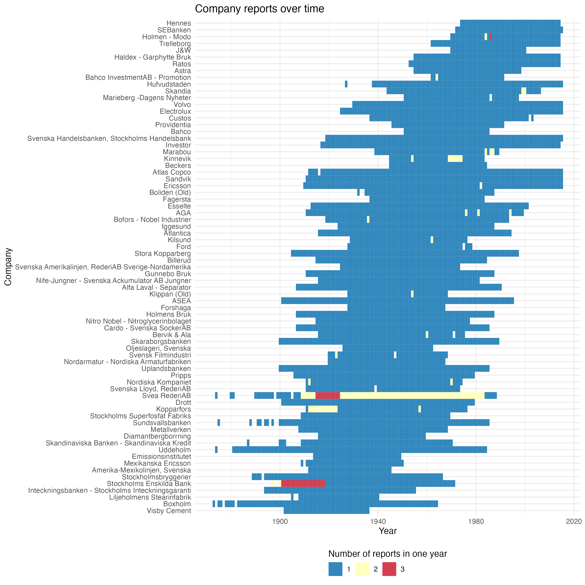
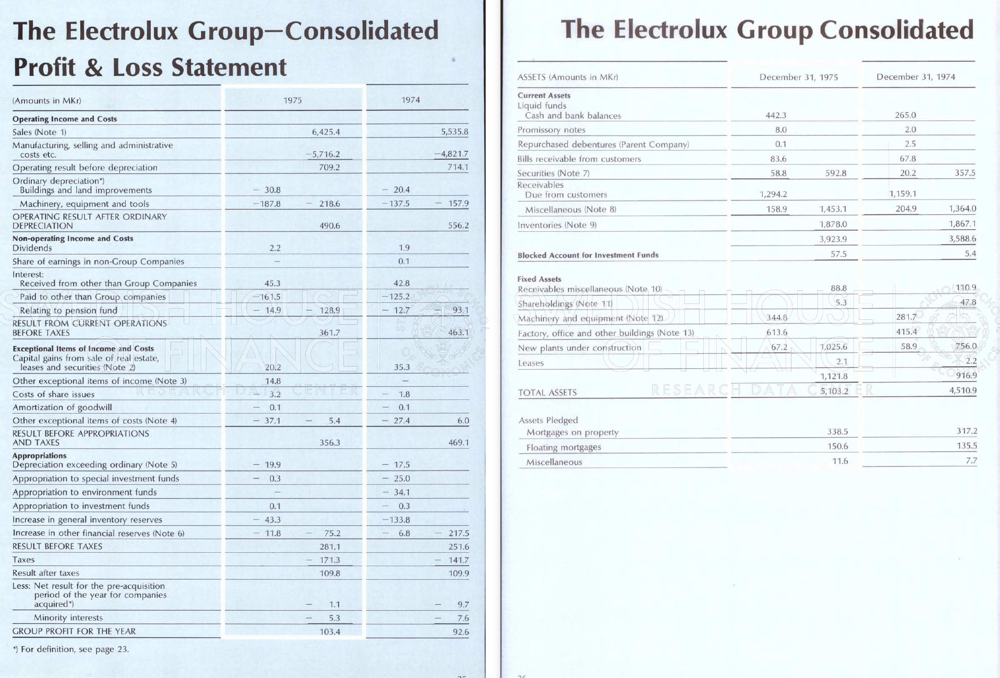
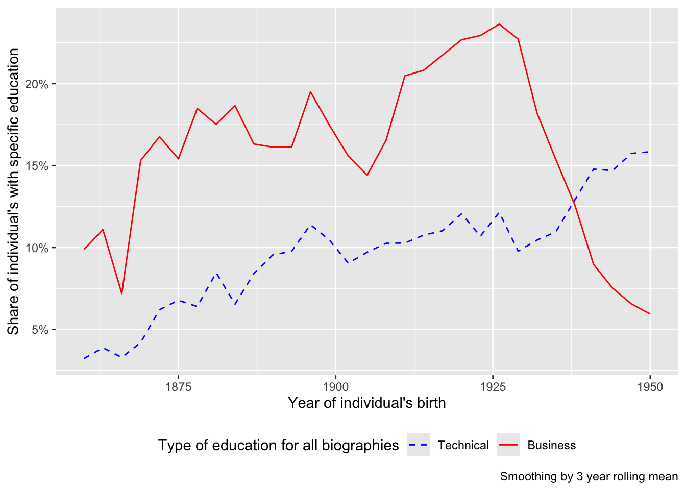
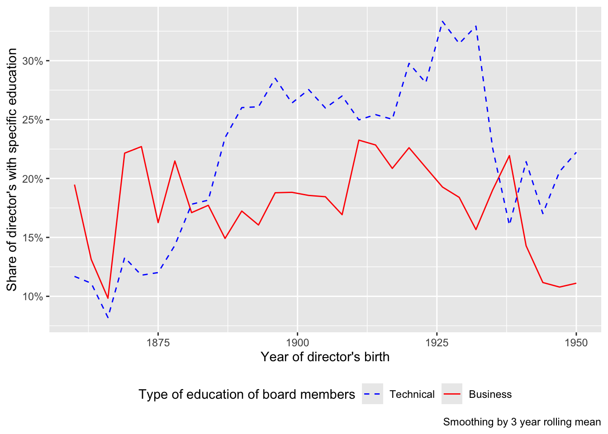
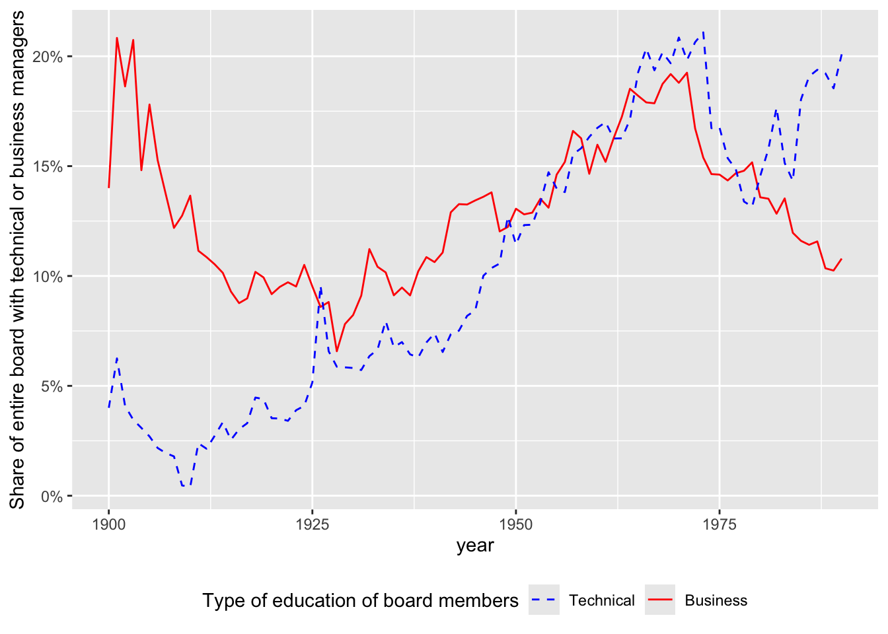

| Biographical Dictionaries | ||
|---|---|---|
| Vem är Vem? and Vem är Det? | ||
| Book Edition | Year | Number of Biographies |
| Vem är det? | 1918 | 3,257 |
| Vem är det? | 1925 | 3,992 |
| Vem är det? | 1933 | 4,365 |
| Vem är det? | 1939 | 5,007 |
| Vem är det? | 1943 | 4,357 |
| Vem är det? | 1945 | 6,441 |
| Vem är vem i Stockholm | 1945 | 6,634 |
| Vem är vem inom handel och industri? | 1945 | 5,087 |
| Vem är vem i Götaland | 1948 | 6,877 |
| Vem är vem i Skåne | 1948 | 4,296 |
| Vem är det? | 1953 | 7,955 |
| Vem är det? | 1955 | 5,501 |
| Vem är det? | 1957 | 7,207 |
| Vem är vem i Stockholm | 1962 | 10,094 |
| Vem är det? | 1963 | 6,312 |
| Vem är vem i Svealand | 1964 | 6,792 |
| Vem är vem i Götaland | 1965 | 9,122 |
| Vem är vem i Skåne | 1966 | 2,767 |
| Vem är det? | 1967 | 9,911 |
| Vem är vem i Norrland | 1968 | 3,654 |
| Vem är det? | 1969 | 9,681 |
| Vem är det? | 1977 | 9,094 |
| Vem är det? | 1981 | 9,987 |
| Vem är det? | 1985 | 9,097 |
| Vem är det? | 1993 | 7,566 |
| Vem är det? | 1995 | 8,865 |
| Vem är det? | 1997 | 8,734 |
| Vem är det? | 2001 | 7,932 |
Untitled
Purpose
This documents holds the econometrics for the paper I am working on titled “Technocrats to Tycoons: The Shift in Swedish Corporate Leadership and Its Economic Consequences in the 20th century”.
Data and Source Criticism
Data sources
This study draws on two interrelated data sources to examine the link between U.S.-experienced engineers on Swedish corporate boards and firm-level outcomes; firm-level financials and board composition from annual reports, and biographical details of directors from historical biographies. The first two come from company reports, while the third is extracted from two sets of biographical dictionaries that detail the lives of prominent Swedes in the 20th century.
I access the annual reports for companies listed on the Stockholm Stock Exchange, collected from the online archives of the Swedish House of Finance at the Stockholm School of Economics (SSE). These reports span 1873–2006, and are provided in PDF form. For the present project, the focus is on data from 1873 to 1980. I extract from these reports income statement information including revenue, cost of goods sold, operating expenses, wages, taxes, depreciation, net income, as well as balance sheet line items; total assets, current assets, fixed assets, total liabilities, current liabilities, long-term liabilities, and shareholder equity. I also extract the number of workers (sometimes disaggregated into white-collar vs. blue-collar).
I limit the sample to firms with at least 30 years of data betwen 1873 and 1980, resulting in 71 firms included. For these 71 firms, the annual reports list the names and positions of their board members (alongside auditors) near the balance sheet. Figure 1 displays the coverage by firm and year.

To know about each director’s educational background, international experience, and broader career trajectory, information was gathered from Swedish biographical dictionaries Vem är Vem? and Vem är Det?. These references document education (e.g., engineering vs. business), overseas postings or study, and other notable career milestones. I detail the digitization of this data in the third paper of my thesis, and include a summary below.
Data Collection and Digitization
The digitization process involved scraping the scanned archival annual reports from the Stockholm School of Economics Library - which along with drawing on their own archive, collected some reports from the Royal Library and Centrum för Näringslivshistoria to fill coverage gaps. This scraping script is available in the code repository linked above.
A novel digitization process was needed to manage changes in financial reporting and layout over eight decades. Conventional Optical Character Recognition (OCR) methods proved insufficient due to inconsistent table structures, especially when reports extended over multiple pages to detail subsidiaries and international branches. Instead, the project used Large Language Models from Google’s “Gemini” family, combined with a custom pydantic data schema, to extract structured information from images. This approach sidestepped the need for traditional OCR by relying on multimodal image-processing capabilities, which improved accuracy and consistency. Nonetheless, certain complexities remain. Reporting language gradually shifted from Swedish to English for some companies, and the scope of financial disclosure expanded, with some early reports totaling only two pages and later ones exceeding one hundred. Although the main income statement and balance sheet items remained comparable, firm-level coverage of current assets, current liabilities, and subsidiary performance varied from year to year. The data is made accessible in the code repository linked above, as well as in an interactive dashboard for exploration, detailed in ?@fig-data-portal.
Despite these technical advances, certain challenges remained. Variations in balance sheet reporting posed difficulties, as some firms presented multi-page breakdowns of assets or liabilities across subsidiaries or international branches, making it difficult to aggregate consistently. Additionally, language changes over time added complexity; reporting language shifted from Swedish to English in the mid-20th century for some companies. This issue was partially addressed by prompting the extraction models to recognize both Swedish and English terms, as evidenced in the reproduced PyDantic data schema in the appendix.

Board composition data were generally easier to extract, given that names and positions typically appeared in a standard location beneath the balance sheet. Individual directors’ surnames, initials, full names, and any listed title (e.g., Verkställande Direktör or Ordförande) were recorded.
To supplement these board lists with directors’ backgrounds, a fuzzy string-matching algorithm was employed to match board members against the Vem är Vem? and Vem är Det? biographical dictionaries. Approximately 72% of board members were successfully matched using surname and initials; improving upon this match rate — potentially by incorporating mentions of employers or corporate affiliations into the matching routine — remains an area for future work. In the later periods towards 1980, the match rate drops slightly as we are drawing mainly on the Vem är Det? biographical dictionaries, which are published later and have less coverage than the Vem är Vem? volumes. It would be possible to improve the match rate by expanding the search to other biographical dictionaries such as the SBL, or company archives, but this is beyond the scope of the paper at present.
An example of the biographical data is shown in ?@fig-vav-1, and the distribution of biographies across volumes and time period is shown in ?@fig-vav-2.
Vem är Vem? and Vem är Det?
Descriptive Statistics on Biographies
After digitizing, there are 161,634 different biographies in the Vem är Vem? and Vem är Det? dictionaries. Some of these entries are for the same individuals in different years, and different editions. As such, after deduplicating based on unique name and birth date combinationss, I am left with 65,773 biographies.
| Top Occupations in Biographical Dictionaries by Gender | ||||
|---|---|---|---|---|
| Top 10 most common occupations for women and men | ||||
| Occupation (sv) | Count | Share (%) | HISCO Code | HISCO Description |
| Women | ||||
| Skådespelerska | 740 | 6.27 | 17320 | Actor |
| Författarinna | 603 | 5.11 | 15120 | Author |
| Författare | 392 | 3.32 | 15120 | Author |
| Journalist | 373 | 3.16 | 15915 | Journalist |
| Tandläkare | 363 | 3.07 | 6310 | Dentist, General |
| Operasångerska | 333 | 2.82 | 17145 | Singer |
| Professor | 316 | 2.68 | 13100 | University and Higher Education Teacher, Subject Unknown |
| Konstnär | 281 | 2.38 | 16000 | Sculptor, Painter, Photographer or Related Creative Artist, Specialisation Unknown |
| Skådespelare | 273 | 2.31 | 17320 | Actor |
| Rektor | 197 | 1.67 | 13940 | Head Teacher |
| Men | ||||
| Direktör | 17,592 | 10.90 | 21110 | General Manager |
| Professor | 10,498 | 6.50 | 13100 | University and Higher Education Teacher, Subject Unknown |
| Civilingenjör | 5,088 | 3.15 | 2210 | Civil Engineer, General |
| Professor Emeritus | 3,684 | 2.28 | 13100 | University and Higher Education Teacher, Subject Unknown |
| Advokat | 2,954 | 1.83 | 12110 | Lawyer |
| Konstnär | 2,743 | 1.70 | 16000 | Sculptor, Painter, Photographer or Related Creative Artist, Specialisation Unknown |
| Redaktör | 2,708 | 1.68 | 15920 | Editor, Newspapers and Periodicals |
| Författare | 2,472 | 1.53 | 15120 | Author |
| Överste | 2,420 | 1.50 | 58320 | Officer |
| Tandläkare | 2,283 | 1.41 | 6310 | Dentist, General |
Board Composition Matched to Biographies
I collect board members from the company reports for each year that they are reported. This includes surname, name or initials, and position on the board if it is available.
For the 71 firms I have in the sample, I collect the names of 3,256 individual board members, who serve at least two years on the board.
Next I match the board members to the biographies in the Vem är Vem? and Vem är Det? dictionaries. This is done using a fuzzy string matching algorithm, which matches on the first name and surname, and the birth date.
I get a match for 2,047 of the board members, or 62.9% of the total, using a threshold of 95 percent confidence. This is a decent match rate, and I am happy with this. TODO: compare to other match rates in e.g. Nick Ford’s work.
Business managers
Following Acemoglu, He and le Maire (2023), I define business managers those who have attended a business school. They use a simple string matching definition1, and I follow a similar process here, looking for the following keywords among the education entries in the biographies.
TECHNICAL_KEYWORDS = [
'tekniska', 'chalmers', 'kth', 'tekn', 'ingenjör', 'teknisk',
'teknolog', 'polytekn', 'engineering', 'technical'
]
BUSINESS_KEYWORDS = [
'handels', 'ekonom', 'handelshögskola', 'business', 'commerce',
'ekonomisk', 'handelsinstitut', 'handelsgymnasium'
]Do we see a shift in education over time among the biographies?
First we look at the share of all individuals in the biographies who have a technical or business education.
Among the 65,773 unique biographies, I plot the year of the individuals birth on the x-axis against the share of individuals with either a technical or business education on the y-axis. We see that in the entire sample, the share of individuals with education from a business school is higher, and that the share of individuals with a technical education is increasing over time.

Next I limit the sample to the 15,301 biographies of individuals with an occupation classified as a director (HISCO code 21000 to 21999).
Here we see that the relative share of individuals with technical education is higher than the share of individuals with business education, at least for individuals born from 1880 to 1935.

Finally, looking at it from the perspective of the boards of the 71 firms in the sample, I show the average share of board members with technical or business education over time, where each board is weighted equally.
Here we see that at the beginning of the period, boards have a higher share of individuals with business education, and that this clbimes from 1925 to 1960.
Similarly, the share of boards with members who have technical education rises almost monotonically from 1905 to 1975, and then declines slightly into the 1980s before recovering again.

Footnotes
Business schools are schools with “Business School”, “School of Business”, “College of Business”, or “School of Management” in the school name (with a few exceptions such as Wharton and INSEAD). Business degrees include bachelors, masters and executive programs of business schools.↩︎